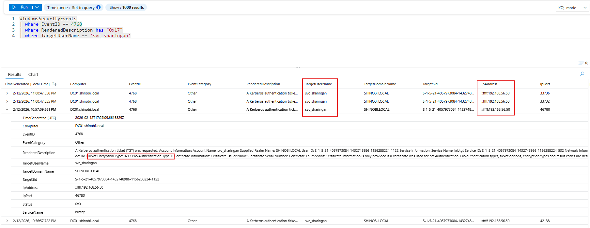
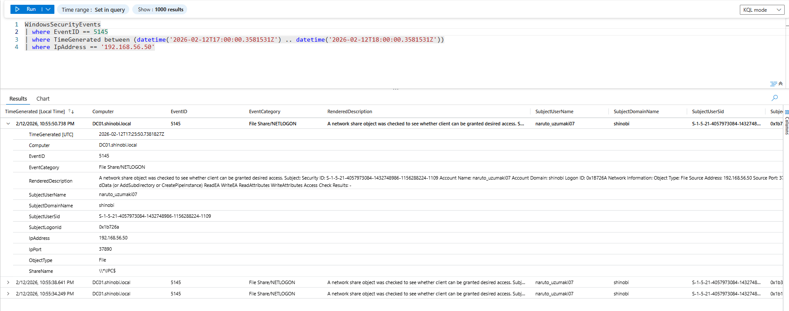

Detection & Telemetry (AS-REP Roasting)
Attack Vector: The attacker identified that the service account svc_sharingan had Kerberos Pre-Authentication disabled. They exploited this by requesting a Ticket Granting Ticket (TGT) for the user. Because Pre-Auth was disabled, the Domain Controller returned an AS-REP packet encrypted with the user's password hash, which the attacker captured to crack offline.
Key Log Sources:
Objective: Detect the specific TGT request that exploits the "Do Not Require Pre-Authentication" vulnerability. Logic: We monitor Event ID 4768 (TGT Request). The specific signature of a roasting attack (executed by tools like Impacket or Rubeus) typically involves:
svc_sharingan).0x17 (RC4-HMAC). Attackers force this weak encryption type because it is significantly easier to crack offline than AES (0x12 or 0x11).0. This explicitly confirms that no pre-authentication data was provided, validationg the vulnerability.KQL Query:
WindowsSecurityEvents
| where EventID == 4768
| where RenderedDescription has "0x17" // RC4 Encryption (Weak)
| where TargetUserName == "svc_sharingan" // The Victim
| project TimeGenerated, EventID, Activity="AS-REP Roast", TargetUserName, IpAddress, TicketEncryptionType, PreAuthType
Analysis:
svc_sharingan0x17 (RC4).0 (Visible in the RenderedDescription of your screenshot).
Objective: Identify the compromised user account that performed the initial reconnaissance (User Enumeration) from the attacker's machine.
Logic: Before the roasting occurred, the attacker used net rpc user to dump the domain user list. This generated network share access logs (Event 5145) against the IPC$ share. By filtering for the attacker's IP (192.168.56.50), we can identify the user context.
KQL Query:
WindowsSecurityEvents
| where EventID == 5145
| where TimeGenerated between (datetime('2026-02-12T17:00:00') .. datetime('2026-02-12T18:00:00'))
| where IpAddress == "192.168.56.50"
| project TimeGenerated, EventID, ShareName, SubjectUserName, IpAddress
Analysis:
192.168.56.50naruto_uzumaki07naruto_uzumaki07 was used to enumerate the domain and identify the vulnerable svc_sharingan account.
{kind=link}
{kind=link}
{kind=link}